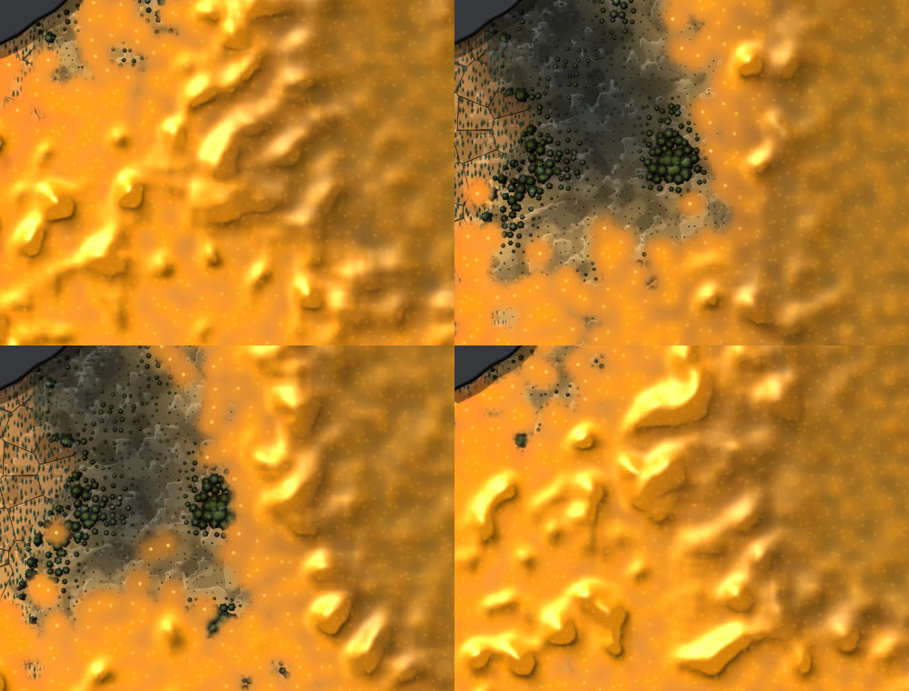
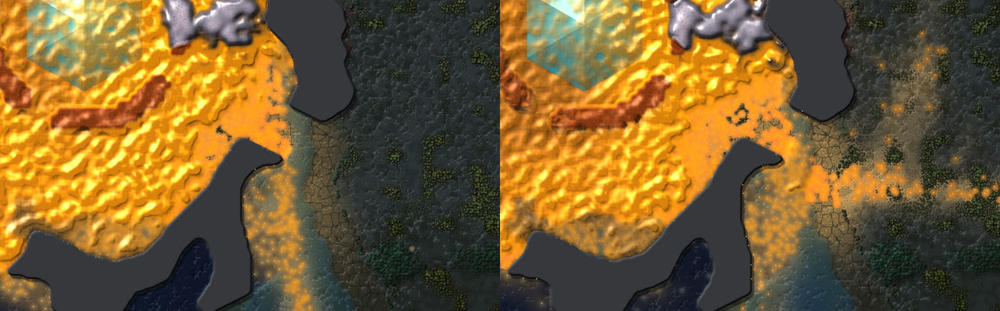

Can the Trunk's thick body grow veins that the simulation makes, so the look has something real to draw? Two rules built on the walkers' own motion: no. Inside the body nothing moves, so there is no flow to build on. What does flow there is food.
Out of its body the Trunk makes long straight cords: walkers stream along a trail ridge, and the ridge is where they stream. Inside the body a fine cell holds at most one walker and the body is close to full, so a walker is mostly blocked; every crowded cell lays the same capped trail, the trail is flat, the sensors read the same, and headings are random.
Both rules read the flow on each 2 x 2 block: every walker adds its step's heading, the block keeps three quarters of it a tick, milling cancels and a stream adds up. Vein deposit: a walker lays trail by how coherent its block's flow is, so streams lay ridges. Align: a calm walker turns toward its block's flow.


Drop both as the Trunk's veins. A rule on walker motion cannot draw veins inside a body packed a walker a cell, because nothing there moves. It only acts on the cords, where vein 0.5 makes them bolder and the slime fiercer: a tuning question, not a look.
What does flow inside a packed body is food: the game's shared food passes energy walker to walker from the crystals the body eats, with no walker moving, and the view can already receive each walker's energy. A vein drawn from that flow is real data. Not yet looked at: whether it has vein structure or is a smooth gradient. If Look draws it once and it is only a gradient, Enemy could share food along the trail ridges so food runs in channels.
Lab branch claude/project-thread-4tc75h, code 042b8a9, keys LAB_VEIN, LAB_ALIGN. Report Reports/lab-veins-2026-11-19/README.md.